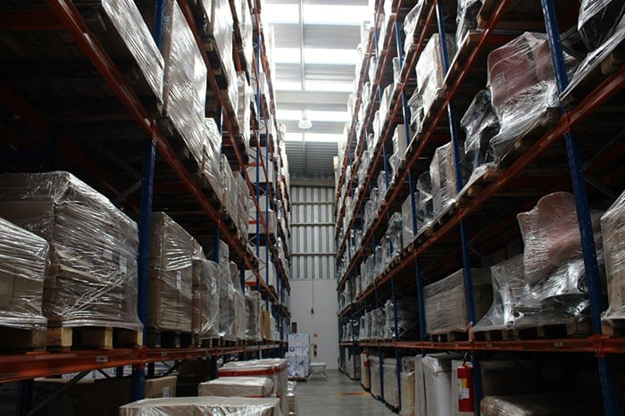

A Eurofilme busca ser referência em embalagens flexíveis de Polietileno, entregando qualidade e se preocupando com o meio ambiente e com a qualidade de vida do colaborador e do cliente consumidor final, que carrega no exercício de sua função, um peso desnecessariamente.
Atuação nos seguintes segmentos: Alimento, Papel e Celulose, Logística/Distribuição e Farmacêutico e Química.
Estabelecida estrategicamente próxima ao Rodoanel de São Paulo, saída da Rod. Raposo Tavares, a Eurofilme é uma empresa Brasileira, que atua em todo o território nacional.
Trabalhamos com bobinas de Filme Stretch manual e máquina (com e sem tubete), e nosso preço está sempre baseado no peso líquido do filme.
Preocupada com o meio ambiente, trabalhamos com logística reversa.
VALORES:
Flexibilidade, Eficiência e Excelência
MISSÃO:
Ser referência de excelência em produtos de embalagens flexíveis.